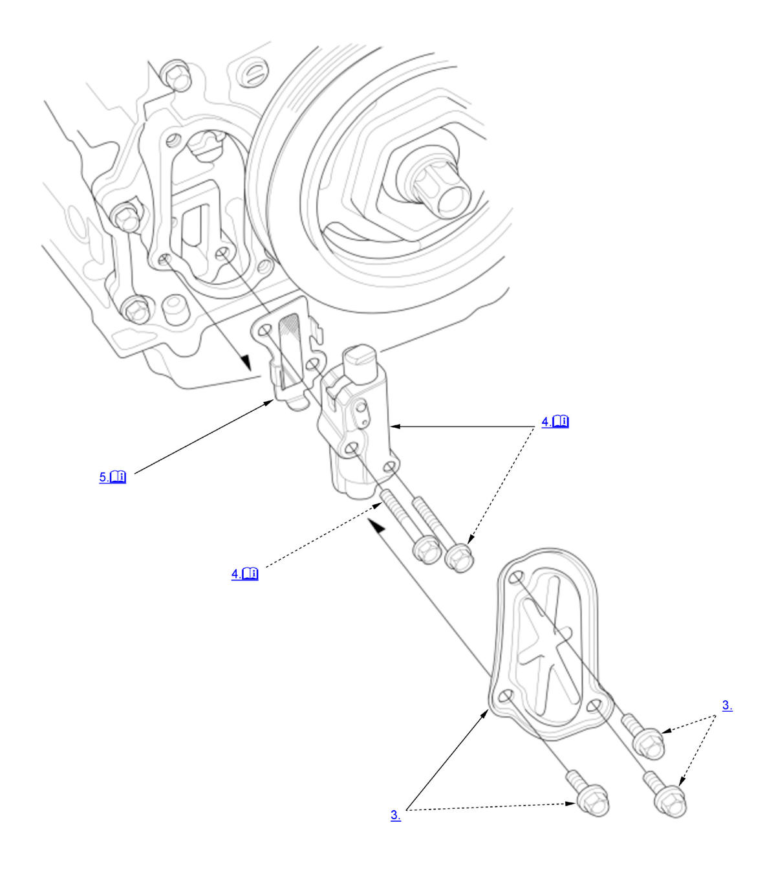

Cam Chain Auto-Tensioner Removal and Installation (K20C1) (2017 2018 2019 2020 2021): Removal: Procedure
NOTE:
Numbered call-outs in figure pertain to list numbers in following procedure.

Courtesy of HONDA, U.S.A., INC. |
Detailed information, notes, and precautions |
- Right Front Wheel - Remove
- Engine Undercover - Remove
NOTE: Remove the necessary part(s).
- Chain Case Cover - Remove
- Cam Chain Auto-Tensioner - Remove
1. Turn the crankshaft counterclockwise to compress the cam chain auto-tensioner. 2. Rotate the crankshaft counterclockwise to align the holes on the lock (A) and the cam chain auto-tensioner (B), then insert a 1.2 mm (3/64 in) diameter pin (C) into the holes. Turn the crankshaft clockwise to secure the pin.
NOTE: If the holes in the lock and the cam chain auto-tensioner do not align, continue to rotating the crankshaft counterclockwise until the holes align, then install the pin. - Cam Chain Auto-Tensioner Filter - Remove
NOTE: Check the cam chain auto-tensioner filter for damage. If filter is damaged, replace it.